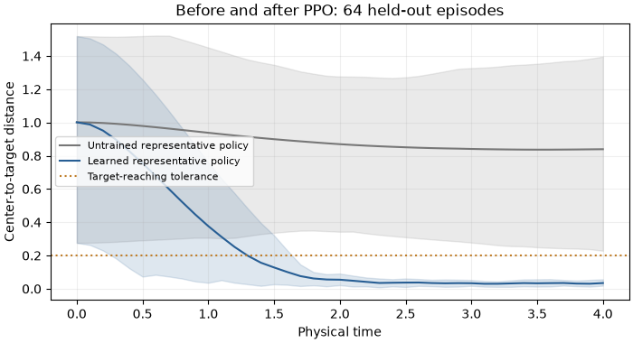
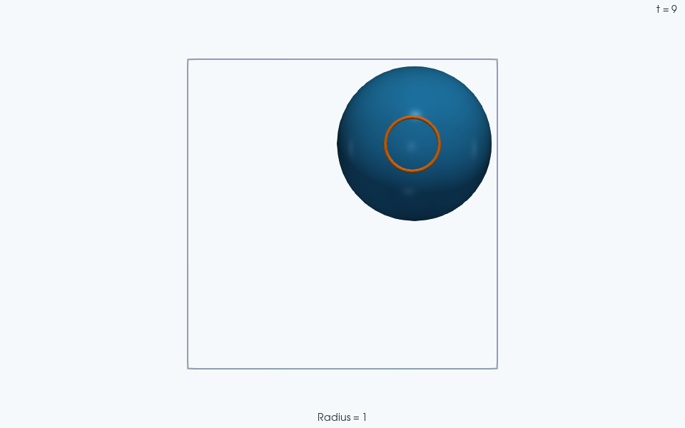

Note
Go to the end to download the full example code.
Intro to JaxDEM reinforcement learning#
This tutorial uses a small
Proximal Policy Optimization (PPO)
training loop to teach a sphere to reach a target in a reflective box,
using SingleNavigator.
A SharedActorCritic MLP
maps observations to a continuous force policy and a value
estimate. Install JaxDEM[rl,io] and matplotlib for the experimental RL
tools, diagnostic plot and optional VTK export used here.
A compact box, damped motion and a physically meaningful action interval let PPO learn target reaching in 64 update epochs. The example compares the initial and learned policies on the same 64 held-out episodes, then follows the learned policy through three new targets. First-call JAX compilation dominates this short run. This fixed-seed demonstration is not a claim about arbitrary tasks or training seeds. Matplotlib supplies the distance diagnostic; ParaView renders the simulation output.
Environment and action intervals#
import jax
import jax.numpy as jnp
import tempfile
from pathlib import Path
import matplotlib.pyplot as plt
import numpy as np
import optax
from flax import nnx
import jaxdem as jdem
import jaxdem.rl as rl
from jaxdem import utils
from jaxdem.rl.env_wrappers import vectorise_env
num_steps_epoch = 32
skip_frames = 49
num_envs = 32
num_epochs = 64
# Each decision spans 50 physics steps: 0.1 time units at dt=0.002.
# Save every two decisions, so the movie shows motion at uniform 0.2 intervals.
decisions_per_frame = 2
frames_per_target = 15
evaluation_steps = 3 * frames_per_target * decisions_per_frame
env = rl.Environment.create(
"single_navigator",
min_box_size=4.0,
max_box_size=4.0,
max_steps=2000, # Four time units, or forty decisions per training episode.
friction=2.0,
action_alpha=1.0,
)
A scalar environment has fixed agent slots. Observations have shape
(max_num_agents, observation_space_size); continuous actions have shape
(max_num_agents, action_space_size). Vectorization prepends an environment
axis. Inactive slots are masked out of the learning objective.
skip_frames=k repeats an action for at most 1+k physics frames,
stopping at an episode boundary. PPO distinguishes termination from external
truncation: only the latter bootstraps the value at the boundary. Evaluation
helpers freeze completed episodes until the caller explicitly resets them.
Reward and the actor–critic decomposition#
reward()
rewards progress through a distance potential:
The start is checkpointed once before repeating an action; the end is the live state after all accepted physics frames. Positive reward therefore means that the agent ended closer to the target. It does not require the distance to decrease on every intermediate frame. Observations and rewards read the live endpoint without advancing that checkpoint.
The shared MLP has policy and value heads. The policy produces a distribution \(\pi_\theta(a\mid o)\) for exploration; the value head estimates expected discounted return. An advantage compares a sampled return with this baseline, guiding the policy toward actions with better-than-expected outcomes.
Model and constrained actions#
MaxNormSpace
constrains sampled force magnitudes to three while retaining a
differentiable probability density. Constructor registry keys ignore case
and underscores. A small two-layer network can learn the direction and
braking feedback needed by this compact navigation task.
The action space is a bijector, so transformed action probabilities include its
Jacobian correction. It preserves direction and maps a standard isotropic
Gaussian to a uniform ball; learned means and variances still shape the
resulting policy. This lets PPO use a bounded action distribution without
applying an additional hard clipping operation that changes sampled actions.
See MaxNormSpace for the radial transform
and its analytic entropy expression.
model = rl.Model.create(
"SharedActorCritic",
key=nnx.Rngs(jax.random.key(1)),
architecture=[32, 32],
observation_space_size=env.observation_space_size,
action_space_size=env.action_space_size,
action_space=rl.ActionSpace.create("max_norm", max_norm=3.0),
)
Configure PPO#
One epoch collects 32*32=1024 single-agent transitions. Each minibatch
selects 256 transitions (eight complete 32-step segments). Sixteen minibatch
updates therefore make four passes through that rollout. The 64 epochs
collect 65,536 transitions; num_epochs counts rollout/update iterations,
not replay passes.
A 0.1-time-unit action interval gives each request a measurable physical effect. The compact box keeps the distance-potential gradient appreciable, and stronger drag makes braking easier to learn. optax.adam keeps this introductory example small; optimizer choice and larger budgets require separate tuning. PPO compares the live policy with the behavior policy that collected the rollout. For stored actions, its clipped surrogate is
The ratio clipping limits the objective’s incentive for large policy changes; it is unrelated to constraining the physical force magnitude. The trainer also fits the value head and includes entropy regularization. Active-agent masks determine which transitions contribute to these averages.
The default vtrace=False uses generalized advantage estimation with live
minibatch value predictions and fixed collection-time bootstraps at rollout
and truncation boundaries. Advantages are used without normalization, while
behavior log-probabilities and the value-clipping reference stay fixed.
A minibatch contains complete fixed-horizon segments; those segments may
cross episode boundaries and need not be complete episodes.
Increase num_envs for more independent data, num_steps_epoch for longer
segments, and num_epochs for more collect/update iterations. These affect
data and optimization differently. A longer run can use
train() and its
logging/directory options, or retain the explicit
epoch() loop shown here
to inspect diagnostics and implement a stopping criterion.
tr = rl.Trainer.create(
"PPO",
env=env,
model=model,
key=jax.random.key(6),
optimizer=optax.adam,
num_steps_epoch=num_steps_epoch,
num_envs=num_envs,
num_epochs=num_epochs,
skip_frames=skip_frames,
num_minibatches=16,
minibatch_size=256,
learning_rate=3e-3,
ppo_entropy_coeff=1e-4,
ppo_value_coeff=0.5,
)
Reserve independent evaluation episodes#
Keep these 64 reset states out of the training loop. Both policies see the
same initial positions and objectives, with zero initial velocity. Evaluation
uses the bounded image of the learned Gaussian mean, via
policy_output(), to measure the feedback law
without extra exploration noise. The bijector maps the base Gaussian mean
to the deterministic representative action used here.
held_out_env = vectorise_env(env, n=64)
held_out_env = held_out_env.reset(
held_out_env, jax.random.split(jax.random.key(101), 64)
)
training_graphdef = tr.graphdef
@jax.jit
def evaluate_policy(graphstate, environments):
evaluation_model, _optimizer = nnx.merge(training_graphdef, graphstate)
evaluation_model.eval()
def step(current, _):
distribution, _value = evaluation_model(current.observation(current))
action = evaluation_model.policy_output(distribution)
current, _terminated, _truncated = utils.advance_action(
current, action, skip_frames=skip_frames
)
distance = jnp.linalg.norm(
current.state.pos_c - current.env_params["objective"], axis=-1
)
return current, distance
_final, distances = jax.lax.scan(step, environments, None, length=40)
return distances[..., 0]
initial_distances = np.linalg.norm(
np.asarray(held_out_env.state.pos_c - held_out_env.env_params["objective"]), axis=-1
)[:, 0]
untrained_distances = np.asarray(evaluate_policy(tr.graphstate, held_out_env))
Run and inspect the PPO updates#
train() is the convenience
loop (train(tr, verbose=False, log=False)). Calling
epoch() directly exposes
the scalar diagnostics. Finite losses are checked here; actual navigation
quality is measured separately below.
for epoch in range(num_epochs):
tr, _transitions, metrics = tr.epoch(tr, jnp.asarray(epoch, dtype=int))
loss = float(metrics["loss"])
assert np.isfinite(loss)
if epoch == 0 or (epoch + 1) % 16 == 0:
print(
f"Epoch {epoch + 1}: loss={loss:.4g}, "
f"mean score={float(metrics['score']):.4g}"
)
tr.env.system.check_overflow()
Epoch 1: loss=-0.0004063, mean score=0.00163
Epoch 16: loss=-0.001465, mean score=0.02347
Epoch 32: loss=0.004538, mean score=0.02127
Epoch 48: loss=0.0005203, mean score=0.02039
Epoch 64: loss=0.002461, mean score=0.01293
Measure learned target reaching#
A center within 0.2 units of its goal counts as reached: one fifth of the sphere radius. Compare full four-time-unit distance traces on the held-out reset states, rather than judging learning from loss or a single movie. Lines show mean distance; shaded bands span the 10th to 90th percentiles across the 64 episodes.
trained_distances = np.asarray(evaluate_policy(tr.graphstate, held_out_env))
success_radius = 0.2
untrained_error = float(untrained_distances[-1].mean())
trained_error = float(trained_distances[-1].mean())
success_fraction = float(np.mean(trained_distances[-1] < success_radius))
print(
f"Held-out mean final distance, untrained/learned: {untrained_error:.4f}/{trained_error:.4f}"
)
print(f"Held-out target-reaching fraction: {success_fraction:.1%}")
assert np.isfinite(trained_distances).all()
assert trained_error < 0.2 * untrained_error
assert success_fraction >= 0.95
decision_interval = float(np.asarray(held_out_env.system.dt).reshape(-1)[0]) * (
1 + skip_frames
)
evaluation_time = decision_interval * np.arange(trained_distances.shape[0] + 1)
fig, axis = plt.subplots(figsize=(7, 3.8), layout="constrained")
for label, distances, color in (
("Untrained representative policy", untrained_distances, "#777777"),
("Learned representative policy", trained_distances, "#275e94"),
):
full_distances = np.vstack((initial_distances, distances))
axis.plot(evaluation_time, full_distances.mean(axis=1), label=label, color=color)
low, high = np.quantile(full_distances, [0.1, 0.9], axis=1)
axis.fill_between(evaluation_time, low, high, color=color, alpha=0.15)
axis.axhline(success_radius, color="#c07d28", ls=":", label="Target-reaching tolerance")
axis.set(
xlabel="Physical time",
ylabel="Center-to-target distance",
title="Before and after PPO: 64 held-out episodes",
)
axis.legend(fontsize=8)
axis.grid(alpha=0.2)
plt.show()

Held-out mean final distance, untrained/learned: 0.8392/0.0343
Held-out target-reaching fraction: 100.0%
Evaluate the live model#
The trainer has its own vectorized environments. Reset the serial environment
separately with reset()
and a reproducible key. Recurrent models need their memory reset
too; the feedforward model used here ignores this operation.
env.env_params["max_steps"] = jnp.asarray(
evaluation_steps * (1 + skip_frames) + 1, dtype=int
)
env = env.reset(env, jax.random.key(202))
# A predeclared demonstration starts at the box center, then visits three goals.
env.state = jdem.State.create(
pos=jnp.array([[2.0, 2.0]]), rad=jnp.ones(1), mass=jnp.ones(1)
)
env.state, env.system = jdem.System.initialize(env.state, env.system)
demonstration_targets = jnp.array([[2.9, 1.1], [1.1, 2.9], [2.9, 2.9]])
env.env_params["objective"] = demonstration_targets[0:1]
base_model = tr.model
base_model.eval()
base_model.reset(shape=(env.max_num_agents, 1), mask=None)
graphdef, graphstate = nnx.split(base_model)
flax.nnx.split
separates static graph structure (graphdef) from mutable graph
state (graphstate). The callback uses
flax.nnx.merge
to combine them, takes the bounded representative action of the learned
policy, then returns the new state. Threading that state through the
evaluator also supports recurrent models. Such models need memory resets at
episode/agent boundaries;
reset() is harmless for this feedforward MLP.
Setting evaluation mode changes model behavior such as dropout. This
callback uses the same deterministic representative action as the held-out
check; PPO collected stochastic actions during training.
@jax.jit
def policy_model(obs, key, graphstate, graphdef):
model = nnx.merge(graphdef, graphstate)
distribution, _value = model(obs, sequence=False)
action = model.policy_output(distribution)
_, graphstate = nnx.split(model)
return action, graphstate
Save an initial frame and fifteen endpoints for each of three target phases. Each phase lasts three physical time units. The 46 saved states are spaced by 0.2 units, so the movie shows both travel and settling at each target. The evaluation horizon is extended beyond all 4500 physics steps; otherwise it would freeze at the shorter training episode boundary.
Each env_step() call with
n=2, skip_frames=49 makes two policy decisions and 100 physics steps.
A context manager completes asynchronous VTK output before exit. The target
marker is appended with add() only to the state
sent to VTKWriter; it does not interact
with the environment or policy. Orange rings mark the same recorded targets
in the embedded movie.
frames_dir = Path(tempfile.mkdtemp(prefix="jaxdem-rl-tutorial-"))
scene_states = [env.state]
scene_systems = [env.system]
scene_targets = [np.asarray(env.env_params["objective"]).copy()]
with jdem.VTKWriter(directory=frames_dir) as writer:
marker_state = env.state.add(
env.state, pos=env.env_params["objective"], rad=env.state.rad / 5
)
writer.save(marker_state, env.system)
for target_index in range(3):
initial_distance = float(
jnp.linalg.norm(env.state.pos_c - env.env_params["objective"])
)
assert initial_distance > 1.0
for _ in range(frames_per_target):
env, tr.key, graphstate = utils.env_step(
env,
policy_model,
tr.key,
graphstate,
graphdef=graphdef,
n=decisions_per_frame,
skip_frames=skip_frames,
)
scene_states.append(env.state)
scene_systems.append(env.system)
scene_targets.append(np.asarray(env.env_params["objective"]).copy())
marker_state = env.state.add(
env.state, pos=env.env_params["objective"], rad=env.state.rad / 5
)
writer.save(marker_state, env.system)
final_distance = float(
jnp.linalg.norm(env.state.pos_c - env.env_params["objective"])
)
print(
f"Target {target_index}: distance "
f"{initial_distance:.3f} -> {final_distance:.3f}"
)
assert final_distance < success_radius
if target_index < 2:
env.env_params["objective"] = demonstration_targets[
target_index + 1 : target_index + 2
]
evaluation_positions = np.asarray([state.pos_c[0] for state in scene_states])
evaluation_displacements = np.linalg.norm(
evaluation_positions - evaluation_positions[0], axis=-1
)
assert np.isfinite(evaluation_positions).all()
assert float(evaluation_displacements.max()) > 0.5
assert int(env.system.step_count) == evaluation_steps * (1 + skip_frames)
env.system.check_overflow()
print(f"Largest evaluation displacement: {evaluation_displacements.max():.3f}")
print(f"Evaluation advanced {int(env.system.step_count)} physics frames.")
print(f"Open the PVD collection in ParaView: {frames_dir}")

Orange rings mark the environment’s actual targets. They are display annotations projected in front of the agent spheres, with radius 0.35; they are not extra simulated particles.
Target 0: distance 1.273 -> 0.005
Target 1: distance 2.541 -> 0.058
Target 2: distance 1.850 -> 0.028
Largest evaluation displacement: 1.350
Evaluation advanced 4500 physics frames.
Open the PVD collection in ParaView: /tmp/jaxdem-rl-tutorial-4zt5ajwm
Total running time of the script: (0 minutes 37.054 seconds)